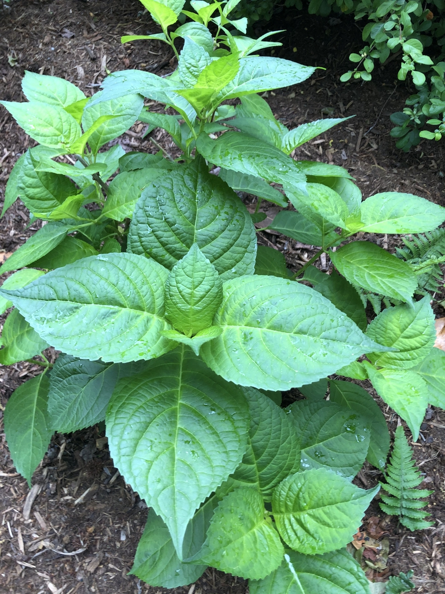

|  |
SITE SELECTION Genus: Hydrangea Species: Hydrangea macrophylla Family: Hydrangeaceae Life Cycle: Perennial woody Country/Region Of Origin: Japan https://plants.ces.ncsu.edu/plants/hydrangea-macrophylla/common-name/hortensia/ |
|
DESCRIPTION Hydrangea macrophylla commonly known as the bigleaf hydrangea is a deciduous flowering shrub grown for its cupious blossoms. They are known for their large rounded flowers and dark green foliage. The flowers are mophead-shaped, meaning they have large globe-shaped flower clusters. The leaves, roots, and flowers have medicinal purposes, while the leaves when rubbed in between hands can be used to make a sweet tea called "tea of heaven." |